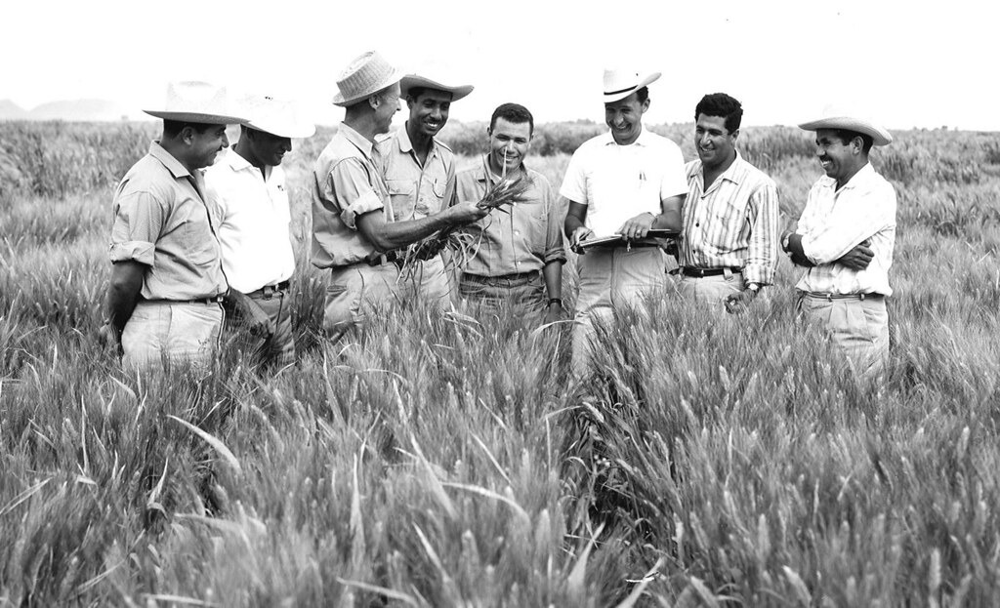

Dr. Norman Borlaug
The man who saved a billion lives
 Dr.Norman Borlaug, third from the left,
trains biologists in Mexico on how to increase wheat yields-part of his life-long war on hunger
Here's time line of Dr. Borlaug's life:
1914-Born in Cresco,lowa
1933-Leaves his family's farm to attend the University of Minnesota,thanks to a
depression era program known as the"National Youth Administratiion
1935-Has to stop school and save up more money.Works in the Civillian Conservation
Corps,helping starving Americans."I saw how food changed them",he said."All the scar left on me"
1941-Tries to enrol in the millitary after the Pearl Harbor attack,but is
rejected.Instead,the millitary asked his lab to work on waterproof glue, DDT to control
malaria,disinfectant and other applied science.
1942-Receives a PH.D, in Genetics and Plant Pathology
1944-Rejects a 100% salary increase from Dupont,leaves behind his pregnant wife,and
files to Mexico to head a new plant pathology program.Over the next 16 years,his team breeds 6,00
different strains of disease resistent wheat-including different varieties for each major climate on
Earth.
1945-Discovers a way to grown wheat twice each season,doubling wheat yields
1953-crosses a short,sturdy dwarf breed of wheat with a high-yielding American
breed,creating a strain that responds well to fertilizer.it goes onto provide 95% of Mexico's wheat.
1962-vists Delhi and brings his high-yielding strains of wheat to the indian
subcontinent in times to mitigate mass starvation due to a a rapidily expanding population
1970-recieves the Nobel Peace Price
1983-helps seven African countries dramatically increase their maize and sorghum
yields
1984-becomes a distinguished professor at Texas A&M University
2005-states"we will have to double the world food supply 2050."Argues that
geneticaly modified crops are the only way we can meet the demand, as we run out of aroble land. Says
that GM crops are not inherently dangerous because "we've been genetically modifying plants and animals
for a long time. Long before we called it science,people were selecting the best breeds".